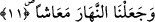
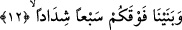

11. Gündüzü de çalışıp kazanma zamanı kıldık.
Yâni gündüzü de hayat vakti kıldık. Siz o vakit geldiği zaman ölümün bir benzeri olan
uykunuzdan dirilmektesiniz. Nitekim Allah bu gerçeği bir başka âyet-i kerîmede şöyle
dile getiriyor: “Sizin için geceyi örtü, uykuyu istirahat kılan, gündüzü de dağılıp
çalışma (zamanı) yapan, O’dur.” (el-Furkan 25/47)
Tefsirini yapmakta olduğumuz âyette, bir önceki âyette geçen “uykunuzu ölüm kıldık”
ifâdesiyle tam bir mutabakat olsun diye “uyanıklığınızı hayat kıldık” denmiyor. Tam
tersine “uyanıklık”, “nehâr/gün” kelimesiyle karşılanıyor. Çünkü gün, çoğunlukla
“uyanık” olmayı gerektirir. Öte yandan burada gözetilen mutabakat “ce’alne’l-leyle/biz
geceyi kıldık” ifâdesiyle kuruluyor ve bu mutabakat için “ve ce’alne’n-nehâra/biz
gündüzü kıldık” buyruluyor. Buradan da anlaşılıyor ki; “biz geceyi bir örtü yaptık” âyet-
i kerîmesi, bir önceki “uykunuzu ölüm kıldık” âyetiyle bir sonraki “gündüzü de çalışıp
kazanma zamanı kıldık” âyeti arasında başlı başına söylenmiş ve araya girmiş bir âyet
değildir. Zira önceki âyette uykudan söz edilmekte ve onu izleyen bu âyette ise uykunun
zamanı gösterilmektedir.
Âyetteki “ma’âşen” kelimesi, “âşe-ye’îşu” fiilinden masdar olup bunun başına bir
muzaf takdir etmek şarttır. Nitekim âlimler, bu kelimenin baş tarafında “vakt” kelimesi
takdir etmişler ve âyetin mânâsını “gündüzü de çalışıp kazanma zamanı kıldık” şeklinde
vermişlerdir. Buna karşılık “maâşen” kelimesinin, ism-i zaman olması da muhtemeldir.
Bu takdirde kelimenin başına muzâf takdir etmeye ihtiyaç yoktur. Bu kelimenin
“geçinme, çalışıp-kazanma vakti” olarak tefsir edilmesi zâten ism-i zaman mânâsını
ortaya çıkarmakta ve onun mânâsını açıklamaktadır.
et-Te’vilâtü’n-Necmiyye’de buraya kadar zikredilen âyetlere şöyle mânâ
verilmektedir: “Biz yeryüzünü bir döşek yapmadık mı?” Biz beşeriyet arzını, rahatınız
ve çeşit çeşit beşerî faydalar elde etmek üzere dağılmanız için döşek yapmadık mı?
“Dağları birer kazık yapmadık mı?” Sizin kaskatı nefis dağlarınızı beşeriyet arzının
kazıkları yapmadık mı? “Sizi çifter çifter yarattık” Sizde ruh ile nefsi, kalp ile nefsi eş
yarattık. “Uykunuzu ölüm kıldık” Gaflet uykunuzu lezzetleri elde edebilmeniz, şehvetleri
sonuna kadar tadabilmeniz için rahat ve istirahat kıldık. “Geceyi bir örtü yaptık” Tabîat
gecenizi rûhâniyet gündüzünüzün örtüsü yaptık. “Gündüzü de çalışıp kazanma zamanı
kıldık” Ruhaniyet gündüzünüzü de itâat ve ibâdetlerle geçirdiğiniz yaşama zamanı
kıldık ki işte bu yeniden dirilme sûretidir.